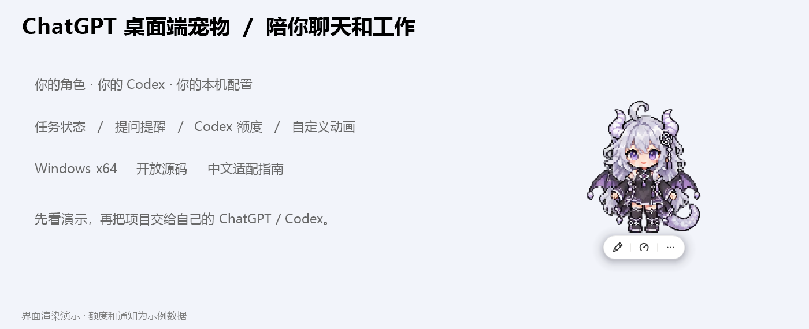

WINDOWS DESKTOP COMPANION · v1.3.1
第一次把 PetBridge 上传到 GitHub
你已经有可用的源码、README、演示图和下载 ZIP。不需要重新制作网页：GitHub 会把仓库根目录的 README.md 显示成项目首页。
第 1 步：分清两个地方
| GitHub 位置 | 放什么 | 别人拿来做什么 |
|---|
| Code（仓库文件） | 解压后的源码内容：README、src、docs、characters 等 | 看介绍、读源码、交给自己的 Codex 修改 |
| Releases（发布版本） | Windows ZIP、源码 ZIP、SHA256SUMS.txt | 下载可运行程序，或下载固定版本源码 |
不要只在 Code 里上传一个 ZIP，否则首页不会展示 README 和图片。不要把 EXE 当单文件发给别人，它需要同目录的角色和资源。
第 2 步：准备上传文件夹
- 找到
PetBridge-v1.3.1-source.zip，右键 → 全部解压。
- 打开解压后的
PetBridge 文件夹。正确的这一层直接能看到 README.md、LICENSE、src、docs、characters、scripts、tools。
- 这就是上传范围。不要选工作区外层，也不要混入自己的私人素材和运行配置。
- Windows 运行包先留着，稍后放到 Releases。

docs/media 已有首页图片和 GIF；和源码一起上传后，README 的相对图片链接会自动生效。文件夹结构要保留。
第 3 步：登录并新建仓库
- 在浏览器登录自己的 GitHub。若未注册，先自行完成注册和验证。
- 右上角
+ → New repository，也可以打开 新建仓库页。
Repository name 填 PetBridge，仓库名就是项目的网址末尾。Description 复制：可换角色的 Windows 桌面搭档：任务状态、提问提醒、Codex 额度和自定义像素动画。- 选
Public，别人才能直接访问。这个目录里的内容将公开。
- 不另外初始化 README、License、
.gitignore，源码包已经有这些。
- 点
Create repository。记下地址，形如 https://github.com/你的用户名/PetBridge。
这是给现有源码建空仓库的方式；官网可对照 新建仓库步骤与界面图。
第 4 步：上传源码，不是上传 ZIP
- 空仓库里点
uploading an existing file；已有文件的仓库则点 Add file → Upload files。
- 在资源管理器进入第 2 步的
PetBridge 文件夹，全选里面的内容，拖进网页上传区。不要把 PetBridge 外层本身再套一层。
- 等上传队列完成。应能看到
README.md 和 docs/media/... 等路径。
- 提交说明填
Add PetBridge v1.3.1。提交说明是这次更新的简短记录，不是软件介绍。
- 若界面允许直接提交到新仓库的
main，可以完成初次提交。若显示 Propose changes，按界面创建分支／Pull request，再检查并合并自己的改动；受保护分支也走这个流程。
网页单文件限 25 MiB，一次最多 100 个文件；当前包若超过数量，就把文件夹分两批提交。分批上传到同一仓库根目录，保留原路径。隐藏文件不好选择时，可使用下面的本机 Codex 方法。GitHub 官方上传说明
第 5 步：确认首页显示正确
回到仓库 Code 页，向下滚动。
| 看到什么 | 表示什么 / 如何处理 |
|---|
| PetBridge 标题、角色图片、GIF 和表格 | README 已生效 |
| 只有 ZIP | 需要把源码解压后上传 |
只有一个 PetBridge 文件夹 | 外面多套一层，README 不在仓库根；让 Codex 帮你整理结构 |
| 文字有了，图片裂开 | docs/media 没传全或路径被改，按源码目录补齐 |
| 点击指南打不开 | 对照 docs 文件夹确认文件名和大小写 |
不需要额外开启 GitHub Pages；项目首页直接用 README，展开区域和图片排版已经做好。
第 6 步：填仓库 About
仓库右侧 About 旁点齿轮，在 Description 粘贴简介。Topics 可填：desktop-pet、windows、codex、chatgpt、pixel-art、desktop-companion。没有实际网站就先不填 Website。
要发给朋友的介绍、Release 标题和发布正文都准备在 发布文案，复制即可。
第 7 步：发布可以运行的下载包
- 仓库右侧点
Releases → Draft a new release。
Choose a tag 输入 v1.3.1，选择新建标签；Target 选含本次源码的 main。标签给这次版本起一个固定名字。Release title 填 PetBridge v1.3.1｜角色、功能演示与中文适配指南。- 正文复制 发布文案 的“Release 正文”。
- 附件区放
PetBridge-v1.3.1-windows-x64.zip、PetBridge-v1.3.1-source.zip、SHA256SUMS.txt。
- 等全部传完。先
Save draft 看文件是否齐全；准备好公开时，再点击 Publish release。
GitHub 自动出现的 Source code (zip) 是源码快照，不等于我们带 EXE 的 Windows 包。告诉使用者优先选名字带 windows-x64 的附件。官方 Release 操作说明与界面图
第 8 步：发给别人
发送仓库地址，或后面加 /releases/latest 的下载页地址。让对方完整解压，先双击 Start.cmd 看默认角色，再把文件夹交给自己的本机 Codex，发送根目录 给Codex的提示词.txt。
普通只读聊天无法直接改对方电脑时，让它先解释步骤，再交由能访问本机文件、执行命令的环境适配。绑定的是对方自己的 Codex，不用作者账号。
已经上传过旧版，怎么更新
保留原仓库，用 Add file → Upload files 上传新版同名源码文件，提交说明填 Update to v1.3.1。同路径内容更新；如果涉及删除或重命名旧文件，网页上传不会自动删除，用 Codex 检查差异再提交更省事。
旧版下载可保留，另外新建 v1.3.1 Release，附本次新 ZIP。不要只改 Release 标题却继续挂旧附件。
想让本机 Codex 帮忙上传
先建空仓库，复制地址，打开解压后的源码文件夹，发送：
请将当前 PetBridge 源码上传到我提供的 GitHub 仓库：我会粘贴仓库地址。
先按 AGENTS.md 检查公开文件，只提交代码、文档、公开默认角色和演示媒体。
保留 README 与 docs/media 的目录关系；排除私人角色、运行数据和登录配置。
如远端已有内容，先 fetch 并检查差异，不强推，不覆盖别人提交。
使用我在本机自行完成的 GitHub 登录，不读取或展示令牌。
提交和推送这次源码；Release 先准备草稿，我检查后发布。
若只需自己运行，不用上传 GitHub；源码和 ZIP 的本地使用不依赖仓库已经公开。